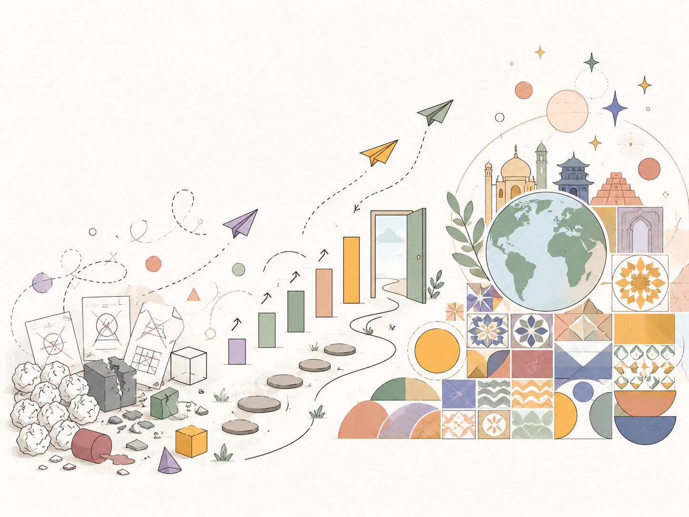
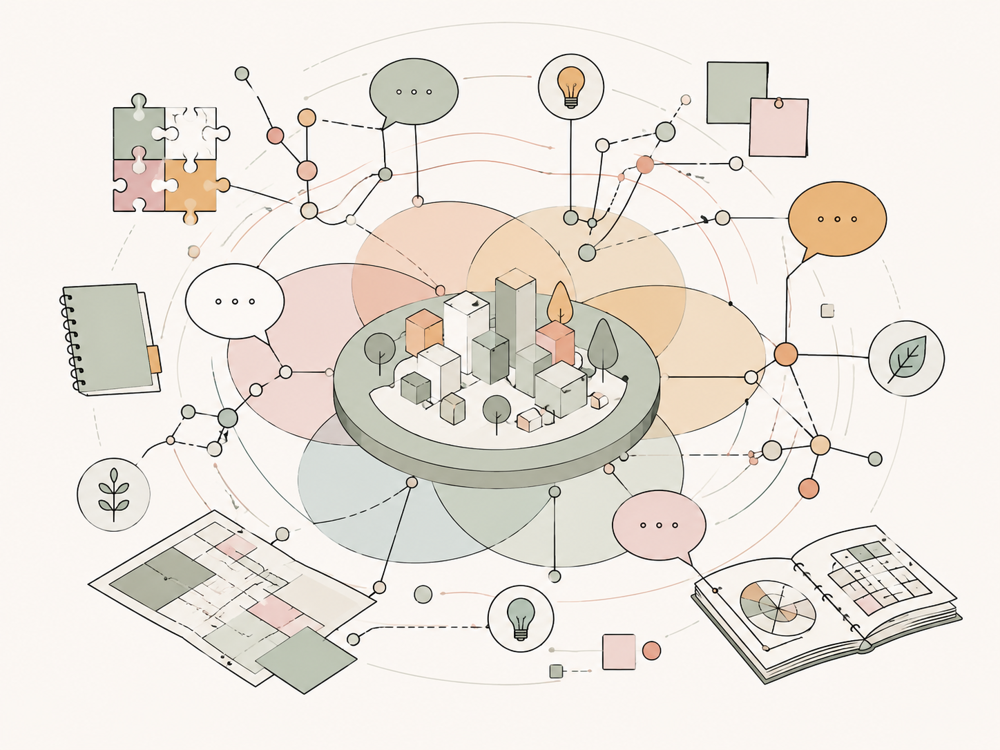

Vision
【人生観・価値観】 Link to heading
失敗を重ね、世界の多様性を味わう ひとつの成功の裏には、きっと九十九の失敗がある。
だからこそ私は、過去の結果にとらわれず、何度でも試し、学び、挑戦し続けたいと思っています。 失敗は、立ち止まる理由ではなく、次の一歩を少しだけ深くするための経験です。
うまくいかなかったことも、遠回りした時間も、誰かとの出会いも、すべてが未来の自分を形づくる大切な要素だと考えています。 また私は、世界の多様さに触れることを大切にしています。
異なる文化、異なる価値観、異なる暮らし方。 それらに出会うたびに、自分の当たり前が少しずつ揺さぶられ、新しい視点が生まれます。 地球という多様性に満ちた世界を味わいながら、まだ知らない景色や考え方に触れ、自分自身の可能性も広げていきたいと思っています。

【研究活動思想】 Link to heading
共創と対話から、技術の価値を見いだす 研究や技術開発において、私は一人で完結する活動よりも、共創と対話の中から生まれる価値を大切にしています。
技術は、単に高度であるだけでは十分ではありません。 社会の中で使われ、人に届き、誰かの行動や意思決定を支えたときに、はじめて本当の意味を持つのだと思います。 だからこそ、関係者とのつながりを広げ、深め、互いの視点を持ち寄りながら、技術のあり方を考えていきたい。
研究者、開発者、行政、企業、地域の人々。 それぞれの立場から見える課題や願いを対話によって重ね合わせることで、社会や地域に根ざした、本当に価値ある技術開発が生まれると信じています。

【技術思想】 Link to heading
人と社会のためのAIをつくる 私は、AIを「人や社会のための技術」として育てていきたいと考えています。 AIの力によって、専門家だけでなく、誰もが社会・地域・街づくりに参加できる。 自分の暮らす街について考え、意見を持ち寄り、未来を選び取る。 そんな参加のハードルを下げる存在として、AIには大きな可能性があると感じています。 いつか、AIが私たちのそばで静かに見守り、必要なときに寄り添い、よりよい意思決定を支えてくれる。 まるでSFアニメで描かれるような、人とAIが自然に共に生きる世界。 それは単なる空想ではなく、これからの技術開発と社会実装によって、少しずつ近づけていける未来だと思っています。
Closing Message Link to heading
失敗を恐れず、違いを楽しみ、対話を重ね、技術を人のために使う。 その先に、誰もが社会のつくり手として関われる未来がある。 私はその未来を信じて、小さな実験と共創を積み重ねながら、これからも挑戦を続けていきます。